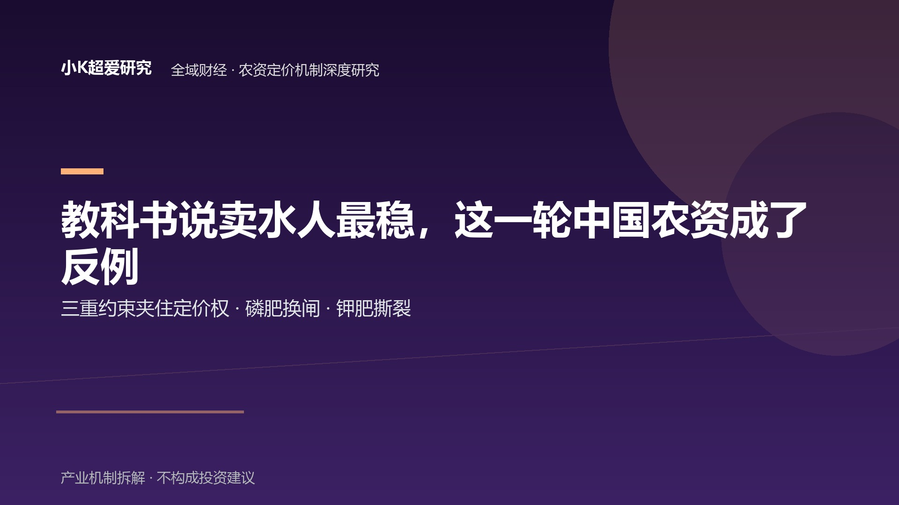

教科书说淘金热里卖水人最稳——这一轮，中国农资成了反例
三重约束 × 磷肥换闸 × 钾肥撕裂：国际粮价大涨的窗口，中国农资的定价权却两头被夹
全域财经 · 农资定价机制 × 政策换闸 深度研究（姊妹篇·第二篇） 2026-09-03 主轴：卖水人悖论（总纲贯穿）× 磷肥换闸（E）× 钾肥撕裂（F）｜参照：9/1-9/2 化肥现货/期货行情 × 发改委 2026 春耕保供稳价通知 × 云天化/盐湖股份公开经营信息 × 行业日报（农资与市场/生意社）｜验证：秋肥旺季磷铵价格 × 出口配额实际发放节奏 × 盐湖出厂价与港口库存走向
全文采用【事实】【机制】【推论】【待验证】四类标记。事实仅使用可回溯公开来源（行业日报/现货行情/公司公开信息/政策文件报道），第三方口径一律标注；不评论政策动机，只写已发生的动作序列与可检验的机制。
导语：教科书说淘金热里卖水人最稳——这一轮，中国农资成了反例
教科书里最稳的生意，是淘金热里的卖水人：大家去挖金，你不挖，你卖水，谁赚钱你都能收到钱。
按照这个逻辑，2026 年应该没有人比中国农资更该笑了：
国际粮价近期明显走强。CBOT 小麦年内涨幅一度超过 54%、创三年新高；玉米 8 月单月 +15.6%；FAO 食品价格指数 7 月 131.1，创 2023 年 1 月以来新高；USDA 7 月供需报告把 2026/27 全球玉米产量下调 2.3%、贸易量下调 4.9%。
【事实：CBOT 小麦/玉米、FAO 指数、USDA 7 月报告口径，新浪财经/第一财经 2026-08-29 至 09-01 综合报道】
粮价要涨，农民就有扩种和增产的动力，扩种增产就要多用肥——化肥，正是农业这条淘金链上最标准的"卖水人"。
结果呢？9 月 1 日到 9 月 3 日，中国化肥市场交出的答卷几乎是"躺平"——而且不是一种躺平，是三种不同的姿态：
- 磷肥：9/1 磷肥出口禁令到期的"解禁日"，一铵（磷酸一铵）不涨反跌，回落至 4250–4300 元/吨，云南产区（云天化等）出厂价周跌 70–90 元/吨，跌幅最大；
- 钾肥：氯化钾港口库存 354.8 万吨、历史新高——但价格没有按"库存高→跌价"的市场逻辑出清：资源端国产到站价仍挺在 3100 元/吨，真正被压垮的是下游加工厂的利润表（硫酸钾加工型企业开工率只有 30–35%，大面积亏损）；
- 尿素：基准价 1712.5 元/吨，微跌 0.15%，库存 167 万吨压顶，弱势整理。
【事实：磷铵/钾肥/尿素现货行情，农资与市场 2026-09-01/09-02、生意社 2026-09-02】
国际粮价在涨，国内化肥却跑出了"不涨反跌 + 结构撕裂 + 弱势整理"三种剧本——而且是在"政策利好刚落地的那一天"。
本篇研究回答三个问题：为什么"卖水人"逻辑在中国农资上失灵？磷肥和钾肥各自发生了什么（两段铁证）？以及——这条链上，到底谁拥有把价格传导下去的能力、谁没有？
一、总纲：为什么"卖水人"逻辑在中国农资上失灵——三重约束
1.1 卖水人逻辑成立的前提，在中国农资上不成立
【机制】
卖水人逻辑要成立，有一个隐含前提：淘金者真的在赚钱，而且越赚越想多挖。
把这个前提翻译到农业上，就是两件事必须同时为真：
- 种粮的人赚到了钱——种粮收益有吸引力，他才会增加投入（买更多的化肥、更好的化肥）；
- 化肥的价格能跟着供需走——需求起来，售价就能起来，卖水人收到水费。
这两件事，在中国农资上，都不成立——或者说，被三重约束压住了。
1.2 三重约束：成本看国际，售价看政策，需求缺弹性
【事实】
第一重约束：成本端——国际化。 硫磺是中国磷肥的关键原料，严重依赖进口，中东货源波动直接推高成本——2026 年多数主体已到成本倒挂边缘（中研普华 9/1 行业调研口径）。磷矿虽然国内有资源，但已列入战略矿产目录，矿权审批收紧，高品位矿流通有限。成本的"定价权"从一开始就不在国内企业手里。
第二重约束：售价端——政策化。 发改委 2026 年春耕化肥保供稳价专项通知明确：鼓励硫磺等原料进口、打击囤货涨价。化肥是"粮食的粮食"，它的售价不只是市场价，还是政策价——在"粮食安全"的优先级面前，化肥涨价的空间被制度性地封顶。
第三重约束：需求端——低弹性。 国内粮价平稳（玉米现货 9/1 全国均价约 2242 元/吨，4–8 月一路阴跌），种粮收益缺乏弹性——农户不会因为国际粮价上涨，就同步大幅增加用肥投入。小麦有最低收购价托底、玉米有储备吞吐，需求这一端，被"稳"字压得没有弹性。
【事实：发改委春耕保供稳价专项通知口径（中研普华 2026-09-01 行业调研转引）；硫磺进口依赖与成本倒挂（同上）；玉米现货均价（腾讯新闻 2026-09-01）】
1.3 总纲一句话：市场存在，但价格的弹性被三重约束压缩了
【机制】
把三重约束放在一起看，中国农资的定价结构就清楚了：
成本端跟国际走（进口原料、国际定价），售价端跟政策走（保供稳价、不许大涨），需求端缺弹性（粮价被稳着，用肥平淡）。
水费被两头定价：进来的时候看国际脸色，出去的时候看政策脸色。卖水人不是"谁赚钱都收钱"，而是"两头都被夹住"。
注意一个微妙的差别：市场不是不存在——磷肥、钾肥、尿素天天都在成交、都在定价。被压缩的是价格的弹性：成本端难以自主控制，售价端存在政策约束，需求端又缺乏弹性。这才是中国农资"卖水人悖论"的真正来源。
后面磷肥（第二章）和钾肥（第三章）发生的两件怪事，不是两个孤立的市场现象，而是这台"三重约束机器"的两个不同切片。先记住这台机器，再去看它的两个产品。
二、证据一（E）：磷肥出口"解禁"是假的——等来的是"换闸"，水龙头被装上了计量表
2.1 事实：市场按"解禁=放开=涨价"交易，结果首日不涨反跌
【事实】
2026 年 3 月 14 日起，磷肥出口执行阶段性禁令；9 月 1 日禁令到期。内外价差摆在那里——国际 DAP（磷酸二铵）离岸价 875–915 美元/吨高位运行，折算与国内价差约 1149 元/吨。
按常理，禁令解除、价差巨大，出口一开闸，磷肥应该应声上涨——这是 8 月底市场的主流预期。
结果 9 月 1 日当天：
- 一铵不涨反跌，回落至 4250–4300 元/吨；
- 云南产区（云天化等）出厂价周跌 70–90 元/吨，全国跌幅最大；
- 9/2 硫磺基准价单日再跌 420 元/吨至 8349 元/吨，长江颗粒硫磺 4 个交易日从 8700 跌到 7500。
【事实：农资与市场 2026-09-01/09-02 晨间行情、生意社 2026-09-02】
2.2 机制：这不是"放开"，是制度切换——从禁令换成"许可证+年度配额"
【机制】
价格为什么不涨反跌？因为市场把"禁令到期"误读成了"自由出口恢复"——但实际发生的，是制度切换，不是制度取消：
- 据行业调研口径，9 月 1 日后磷肥出口并非恢复自由出口，而是进入"许可证+年度配额"管理模式；
- 配额不是平均分配，而是向"国内保供到位、核销效率高"的产能倾斜；
- 换句话说，出口从"谁都能做的生意"，变成了"少数拿到配额者才能做的许可证生意"。
⚠️ 可信度边界：上述制度安排为行业调研口径，官方文件原文目前尚未检索到——本段所有关于"许可证+年度配额"的描述均基于该口径，非官方文件原文。
【事实：中研普华 2026-09-01 行业调研口径（磷肥出口配额新规）；配额归属明细为【待验证】，各企业份额未公开】
把这个制度切换翻译成商业语言：
- "解禁"如果成立，逻辑是量价齐升——出口量上去、价格上去；
- "换闸"的真实效果是有资格的人才能出口——配额卡住了总量，出口红利从"行业普惠"变成"少数人专享"；
- 同时，硫磺成本塌陷（下游磷铵厂"用不起就限产"，一铵开工率 51.92%、周降 3.63 个百分点；二铵开工率仅 40% 出头、同比低十几个百分点）——下游用停产倒逼上游降价，原料端先崩了。
【事实：磷铵开工率数据，今日头条行业分析 2026-08-29 转引行业开工率统计】
所以 9/1 我们看到的是三层利空叠加：配额卡住出口总量（利好落空）+ 硫磺暴跌拖累成本支撑（成本塌陷）+ 需求疲软（开工率低位）。内外价差 1149 元/吨的红利，看得到、吃不到。
【推论】市场用一个"利好兑现"的旧框架，去交易一个"游戏规则变更"的新事件——框架错位，是磷肥 9/1 不涨反跌的重要解释。9/1 的核心矛盾不是"出口有没有恢复"，而是市场期待的出口弹性，并没有真正转化成有效需求。 这恰好印证了总纲：中国磷肥的价格不是由"出口需求"这一个变量决定的，而是由"政策闸门+成本+国内保供"共同决定的。
2.3 人物锚：宋立强——换闸发生时，龙头掌门站在什么位置
【事实】
云南产区是 9/1 磷铵跌幅最大的产区，而云南磷肥的绝对主力是云天化。云天化现任党委书记、董事长宋立强，2025 年 8 月 11 日上任——他的任期横跨 2025 年 8 月至今，完整覆盖了 2026 年 3 月出口限制和 9 月制度切换两个关键节点。
【事实：云天化公告（2025 年换届文件，宋立强 2025-08-11 起任董事长、法定代表人，任期至 2028-08-10）】
云天化处于云南磷肥产业链的核心位置——矿、肥一体化体系使其在成本端有相对优势，其掌舵者的位置，恰恰是观察"换闸"如何影响龙头经营决策的一个窗口。
但需要说明：公开信息不足以证明云天化在 9/1 的具体经营决策，因此本文不将其行为解释为"赌价差"或"不赌价差"。宋立强在这篇研究里的作用，是提供一个产业位置坐标——换闸发生时，行业龙头掌门站在链条的哪一格，而不是替他去解释一笔我们没有证据的交易决策。
三、证据二（F）：钾肥的"撕裂"——崩的不是钾肥价格，是下游加工厂的利润表
崩的不是钾肥价格，是下游加工厂的利润表。
【机制】
同一袋钾肥，上游资源端与下游加工端，实际上面对的是两套价格体系——这是本章的核心。先看事实，再拆机制。
3.1 事实：库存历史新高，价格却不崩——三组看似矛盾的数据
【事实】
2026 年 9 月初的钾肥市场，同时存在三组看似矛盾的数据：
- 氯化钾港口库存 354.8 万吨，历史新高（行业媒体 9/2）；
- 青海盐湖国产 60% 晶第一到站价仍挺在 3100 元/吨，不跟跌；进口钾基准价 3416.67 元/吨，处于一年低位（生意社 9/2）；
- 硫酸钾加工型企业（外购氯化钾、曼海姆法）开工率只有 30–35%，大面积亏损（行业媒体 9/2）。
【事实：生意社 2026-09-02、行业媒体 2026-09-02】
按市场出清的逻辑，库存创历史新高，价格应该崩——但崩的不是钾肥价格，而是下游加工厂的利润表。
3.2 机制：资源端国企的定价逻辑，从来不是市场出清
【机制】
为什么库存压顶、价格不崩？因为中国钾肥的供给端，不是一个"随行就市"的市场主体，而是一个按保供责任定价的国企：
- 盐湖股份（察尔汗盐湖，国内氯化钾最大生产商）自 2025 年起全面并入中国五矿体系；
- 它的官方定位写得很清楚——"国家粮食安全的压舱石、新能源产业的稳定器、高端轻金属材料的生力军"，公司年度工作报告里"钾肥保供国家队"是三大使命之首；
- 对这样的主体，钾肥价格的第一约束不是"去库存、回笼资金"，而是"保供稳价：不能让钾肥涨价传导到种粮成本"。
【事实：盐湖股份 2026-02-02 年度工作会报告口径（侯昭飞作报告）、中国五矿 2026 年度工作会议报道（盐湖股份官网转载）】
于是同一个品种（钾），上下游出现了两套完全不同的定价逻辑：
| 资源端（盐湖股份） | 加工端（硫酸钾曼海姆工厂） | |
|---|---|---|
| 定价依据 | 保供稳价的责任 | 外购成本 vs 售价的市场出清 |
| 库存 354.8 万吨历史新高时的反应 | 出厂价挺 3100 不跌 | 原料不跌、产品涨不动 → 亏损 |
| 行为主体 | 央企体系国企 | 民营/加工型企业 |
| 结果 | 价格稳住了 | 开工率 30–35%，大面积亏损 |
【机制】资源端把价格"扛住"，对加工端是双杀：氯化钾（原料）不跌，它们的成本就下不来；而钾肥终端需求平淡，产品售价涨不动——原料端有人托底，产品端没有，中间环节被挤成压缩饼干。
【事实佐证】硫酸钾价格反而因为加工型大面积停产、供给收紧而走出独立上涨——这恰恰是撕裂的自证：加工端用停产换来了自己产品的一口气，但停产的代价是利润表上的大面积亏损。
3.3 人物锚：侯昭飞——"压舱石"三个字，就是"钾肥为什么不崩"的答案
【事实】
盐湖股份现任党委书记、董事长侯昭飞，2025 年 3 月起掌舵，主导了盐湖并入五矿体系后的"百日融合·焕新行动"；2026 年 2 月年度工作会上，他作的报告题目是《勇扛使命责任 坚持实干干实》，核心是三大使命——钾肥保供国家队排第一。
【事实：盐湖股份官网新闻（2026-02-02 年度工作会）；侯昭飞 2026-01 至 08 月持续以党委书记、董事长身份出席公开活动（官网新闻）】
【推论】（基于公开话语的推断，非事实）侯昭飞的话语体系里，"压舱石"永远排在"利润"前面——这不是个人风格，是股东结构决定的：中国五矿体系下的盐湖股份，钾肥定价的第一约束是粮食安全，不是股东回报最大化。这就是为什么钾肥库存能创历史新高、价格却有人扛着不崩——扛住价格的，不是单纯的市场出清机制，而是资源属性、保供责任与企业定价机制共同作用的结果。
3.4 反直觉点：库存历史新高 ≠ 价格要崩
【机制】
大众对商品的直觉是"库存多了就要跌价"，但这条直觉只对"市场出清型"的商品成立。当供给端存在一个"保供定价"的国企时，库存和价格的关系就被打断了：盐湖可以接受库存高企（保供的体现之一就是随时有货）——资源型国企承担的核心约束，并不完全等同于市场化企业的库存收益最大化目标。
真正对库存敏感的是下游加工厂：它们没有矿、没有定价权，原料价格被托着、产品价格涨不动，库存压力全部转化成了它们的亏损。
所以钾肥这一章最反直觉的事实是：在一个库存创历史新高的品种上，崩的不是价格，是产业链上没有资源的那一段。
四、谁拥有价格传导能力——把 E、F 放回总纲
4.1 链条价值分配：中国农资的每一环，离"价格传导能力"有多远
| 环节 | 代表玩家 | 价格如何被决定 | 这一轮的实际处境 |
|---|---|---|---|
| ① 原料（硫磺/磷矿/钾矿） | 硫磺进口商、磷矿/钾矿资源方 | 硫磺看国际，磷/钾矿看资源与矿权 | 硫磺暴跌拖累全链成本；磷矿钾矿资源方相对免疫 |
| ② 资源型化肥厂（磷铵/氯化钾） | 云天化（磷）、盐湖股份（钾） | 磷铵：出口配额+成本；氯化钾：保供定价 | 磷铵：换闸后价格被制度压平；氯化钾：保供扛价 |
| ③ 加工型（硫酸钾/复肥/贸易商） | 曼海姆法硫酸钾厂、复合肥厂 | 几乎没有——原料外购、售价随行 | 开工率 30–35%，大面积亏损（钾）；两头被夹（磷） |
| ④ 流通与农户 | 农资经销商、农民 | 最低 | 粮价稳→用肥平淡，无追涨动力 |
【机制】这张表的规律非常清楚：离资源越远、离市场出清越近的环节，价格传导能力越弱。 需要说明的是，这张表混合了不同类型的"力"——资源权（有矿无矿）、制度资格（有没有配额）、成本控制力（一体化程度）、市场议价权（面对客户时的定价空间）。不把它们简化成单一的"定价权排序"，是因为这四样东西经常不在同一个人手里：资源型国企有矿也有保供资格，但它的出厂价被责任钉住；一体化龙头有成本优势，但出口红利被配额卡住。
这张表真正回答的是：当国际粮价上涨、成本波动、政策换闸同时发生时，谁有能力把价格按自己的意愿传导下去——谁不能，谁就先出清。 资源型国企可以不按市场出清定价（保供），一体化龙头可以靠成本扛过周期，而既没有矿、又必须外购原料、还必须随行就市卖产品的加工型/贸易型环节——它们才是真正的"市场定价"承担者，也就是这轮行情里最先被挤的那一段。
4.2 抬升视角：中国农资的"卖水人"，卖的不是水，是"被许可卖水"的资格
【机制】
把三重约束、磷肥换闸、钾肥撕裂放在同一个镜头里，一个更结构性的判断浮出水面：
全球农资市场的"卖水人"，赚的是供需价差——国际钾肥供给高度集中，资源与产能集中度使主要生产商拥有较强的供给侧议价能力；而中国农资的定价权，从一开始就不完全在产业手里，而在制度手里：
- 磷肥的出口权，被许可证+配额收走（第二章）；
- 钾肥的售价，被保供定价托住（第三章）；
- 化肥的零售价，被保供稳价通知封顶（第一章）。
【事实：国际钾肥供给集中度为行业常识背景；中国侧三处制度约束见前述各章来源】
所以中国农资最稀缺的东西，不是需求——中国有 14 亿人的饭碗，化肥需求全球第一，从不缺需求；真正稀缺的是定价权：成本端定价权在国际（硫磺、进口钾），售价端定价权在政策（保供稳价），企业手里剩下的，只有"能不能拿到配额、有没有自己的矿、成本是不是比别人低"这三张牌。
这就是"卖水人悖论"：在一个需求全球第一、粮价全球走强的市场里，中国农资作为"卖水人"，却几乎没有任何一端的价格是自己说了算的。水是有的，淘金客也够多，但水费怎么收、能收多少——不由卖水人定。
【旁证】同属磷化工体系的草甘膦，在同期价格与出口表现上明显强于磷铵（Q3 均价 2.65 万元/吨、环比 +13.4%，前 8 月出口 44 万吨、+10.3%）——原料自给和一体化能力，会改变企业对周期的暴露程度。它不承担本文的主结论，只作为"谁更能扛周期"的一个对照注脚。
【事实：草甘膦 Q3 均价与出口数据，行业媒体 2026-09-02；兴发集团一体化结构为公司官网公开信息】
五、反方：不当市场回答，给两个情景
情景 A（秋肥旺季补涨——"卖水人逻辑回归"）： 9 月中旬秋肥备肥启动，若磷铵出现连续明显补涨、并伴随尿素同步走强——说明 9/1 的不涨反跌只是"政策切换的传导延迟"，需求弹性最终穿透了制度压制，卖水人逻辑在旺季窗口短暂回归。此时本文的"换闸"判断需修正为"换闸但需求强到可以穿透闸门"，定价权命题在旺季窗口不成立，但"制度决定长期价格中枢"的框架依然有效。
情景 B（保供+配额双紧持续——"卖水人模式永久熄火"）： 若秋肥旺季磷铵/尿素仍被保供与配额双重压制、价格低波动成为新常态——那么依赖"价差红利"的商业模式（囤货、赌出口、赚内外差）在中国农资里将永久失效。活下来的只有三类主体：有矿的（资源壁垒）、一体化的（成本壁垒）、有配额的（制度壁垒，配额归属目前【待验证】）。加工型/贸易型的命运，是继续被两头夹，直到行业出清。
【推论】两个情景的差异，本质是同一个问题的两种答案："定价权"能不能从制度手里夺回一部分。 情景 A 是需求暂时夺回；情景 B 是制度彻底接管。无论走哪条，赚"价差"的时代都在收窄，赚"资源+成本+资格"的时代在开启。
六、证伪条件：哪些数据出现，本文就错
| # | 若出现 | 本文哪一条就错 |
|---|---|---|
| 1 | 秋肥旺季（9 月中旬起）磷铵出现连续明显补涨，且尿素同步走强 | "换闸压制价格"的 E 证据降级——不是规则改变，只是传导延迟 |
| 2 | 官方明确出口配额"不设限、申报即放行"（自由出口实质恢复） | "磷肥出口是许可证+配额制"的制度判断作废（该判断本就基于行业调研口径） |
| 3 | 盐湖股份出厂价下调 >10% 或主动大规模去库存（放弃保供定价） | "资源端国企按保供责任扛价"的 F 证据作废 |
| 4 | 硫酸钾加工利润转正、开工率回到 60%+（加工端不再亏损） | "加工端被两头夹、大面积亏损"的撕裂叙事失效 |
| 5 | 化肥零售端出现发改委通知所禁止的普涨（全品种明显上涨）且无政策跟进 | "售价端被保供稳价封顶"的总纲前提不成立 |
| 6 | 硫磺价格快速反弹回 8700 以上并站稳（成本端重新坚挺） | 9/1 磷肥下跌的"成本塌陷"归因需修正（但不影响"换闸"判断） |
这不是路线预测，是"在什么条件下我承认自己错了"。第 1、3 条是本文的命门——它们分别检验 E（磷肥换闸）和 F（钾肥撕裂）是否成立；第 5 条检验总纲（三重约束）是否成立。
冷硬结尾
国际粮价上涨，本该给"卖水人"带来更好的生意；但中国农资没有按这套旧剧本运行。
磷肥告诉我们，出口"解禁"未必等于出口自由；钾肥告诉我们，库存上升也未必意味着资源端价格立即出清。真正先承受压力的，可能是没有资源、没有配额、又无法向下游转嫁成本的中间环节。
所以，这一轮最值得观察的不是"化肥会不会涨"，而是谁能够真正决定价格：资源、制度，还是需求。秋肥旺季的价格变化，才是对这个答案的下一次验证。
数据口径与来源说明
| 数据 | 口径 | 来源 |
|---|---|---|
| CBOT 小麦年内涨幅/玉米 8 月 +15.6% | 期货行情 | 新浪财经/第一财经 2026-08-29 至 09-01 综合 |
| FAO 7 月食品价格指数 131.1 | 联合国机构指数 | 同上 |
| USDA 2026/27 全球玉米产量 -2.3%/贸易量 -4.9% | USDA 7 月供需报告 | 同上 |
| 磷肥出口"许可证+年度配额"新模式 | 行业调研口径，非官方文件原文 | 中研普华 2026-09-01 |
| 配额倾斜"保供到位/核销效率高"主体 | 行业调研口径 | 中研普华 2026-09-01 |
| 9/1 一铵不涨反跌 4250-4300、云南周跌 70-90 | 现货行情 | 农资与市场 2026-09-01/09-02 |
| 硫磺 9/2 单日 -420 至 8349 元/吨 | 现货行情 | 生意社 2026-09-02 |
| 一铵开工率 51.92%（周 -3.63%）、二铵 40% 出头 | 行业开工率统计 | 今日头条行业分析 2026-08-29 转引 |
| 内外价差约 1149 元/吨、国际 DAP 离岸 875-915 美元 | 现货行情对比 | 农资与市场 2026-09-01 |
| 发改委 2026 春耕保供稳价专项通知（鼓励硫磺进口/打击囤货） | 政策文件报道 | 中研普华 2026-09-01 转引 |
| 氯化钾港口库存 354.8 万吨历史新高 | 行业统计 | 行业媒体 2026-09-02 |
| 盐湖国产 60% 晶到站价 3100、进口基准 3416.67 | 现货行情 | 生意社 2026-09-02 |
| 硫酸钾加工型开工率 30-35%、大面积亏损 | 行业统计 | 行业媒体 2026-09-02 |
| 尿素基准 1712.5（-0.15%）、库存 167 万吨 | 现货行情 | 生意社 2026-09-02 |
| 草甘膦 Q3 均价 2.65 万（+13.4%）、前 8 月出口 44 万吨（+10.3%） | 行业统计 | 行业媒体 2026-09-02 |
| 宋立强 2025-08-11 任云天化董事长 | 公司公告 | 云天化换届公告/新浪财经高管资料 |
| 侯昭飞年度工作会报告/五矿三大使命 | 公司公开口径 | 盐湖股份官网 2026-02-02、中国五矿 2026 年度工作会议报道 |
| 兴发集团一体化结构 | 公司公开口径 | 兴发集团官网 |
- 配额归属明细（哪家企业拿多少）、兴发等企业具体配额份额为【待验证】，未写成结论。
- 磷肥配额新政细节为行业调研转引口径，官方文件原文未公开检索到，已在正文 2.2 显著标注。
- 本篇只写已发生的动作序列与公开行情，不评论政策动机，不构成投资建议。